Attention is All You Need
본 글은 Google Brain에서 2017 NIPS에 발표한 Attention is All You Need 논문에 대한 리뷰이며 동시에 제 첫 논문 리뷰글입니다.
자연어 처리(NLP)등의 분야에서는 순서를 가진 sequence형 데이터를 학습하기 위해 그동안 많은 모델을 제시했습니다. 대표적으로 encoder와 decoder 방식을 활용한 RNN 또는 CNN이 있는데, 이들은 순서가 있는 데이터의 특성상 순차적으로 input을 학습하고 output을 도출할 수밖에 없었습니다. 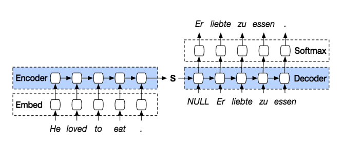 순차적으로 데이터를 처리하는 방식은 근본적으로 병렬화(parallelization)를 불가능하게 만들어 계산적 효율성을 제한할뿐만 아니라 긴 문장이 들어왔을 때 여러 layer를 거치면서 앞의 input에 대한 정보가 희미해지는 등의 문제가 있었습니다. 이를 해결하기 위해 ‘output을 도출할 때 어떤 input에 집중해야 하는지’에 대한 정보를 추가하는 attention 메커니즘을 추가하기도 하였지만(seq2seq 모델) 여전히 학습 속도 저하에 대한 한계가 존재했습니다. 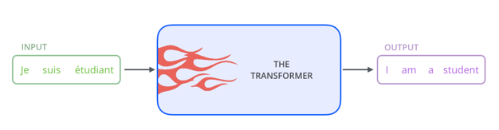 위 논문에서 제안한 Transformer는 병렬화를 가능하게 하여 학습의 효율성과 모델의 성능을 기존보다 월등히 끌어올렸다는 점에서 NLP 및 다양한 분야에 많은 기여를 했다고 생각합니다. 또한 순차적인 과정 없이 attention 메커니즘만을 이용하였기 때문에 input과 output 사이에 포괄적인 상관관계(global dependency)를 이끌어냈습니다.
Self-Attention
Transformer의 핵심 개념은 attention 메커니즘, 그 중에서도 self-attention 메커니즘이라고 할 수 있습니다. Transformer는 attention 정보를 얻기 위해 각 sequential input에 대한 Query, Key, Value 값을 생성하고, Query와 Key 값을 매칭하여 input (NLP에서는 단어, vision에서는 pixel) 사이의 연관성 또는 유사도(compatibility)를 나타내는 attention score를 계산합니다. Attention score는 해당 input과 다른 sequence inputs 사이의 의미론적 연관성을 나타내는 값이기 때문에, 이를 기존의 sequence input에 곱하면 전체 sequence 내에서 각 input이 갖는 의미를 강조한 새로운 sequence를 얻을 수 있습니다. 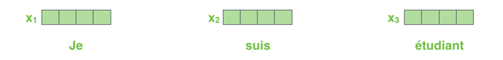 Attention layer에 들어가기 전에 모든 input은 그 특성을 가장 잘 나타낼 수 있는 다차원의 embedding 벡터로 변환됩니다. Embedding 벡터는 dmodel 의 차원을 가지게 되고, 이는 각 encoder 또는 decoder 블럭을 지나도 동일하게 유지됩니다. 위 그림에서 dmodel=4로 표현되었지만, 실제 논문에서는 dmodel=512를 사용하였습니다. Input sequence를 embedding 벡터로 변환하는 과정은 학습시킨 Linear layer을 통과함으로써 이루어집니다.
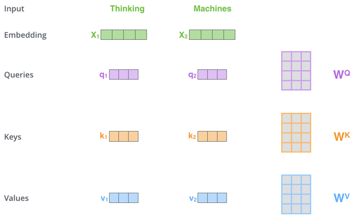
Self-attention 과정에서 embedding 벡터는 WQ, WK, WV 의 세 행렬을 통해 각각 query, key, value 벡터로 변환됩니다. Self-attention 과정이 일반적인 attention 메커니즘과 다른 점은, query, key, value 벡터를 하나의 동일한 벡터로부터 생성한다는 점입니다. 변환 행렬의 크기를 (dmodel x dquery, dmodel x dkey, dmodel x dvalue)라고 한다면 output 벡터의 차원은 dquery, dkey, dvalue가 됩니다. (본문에서는 dquery = dkey = dvalue = 64로 설정하였습니다.)
여기서 WQ, WK, WV는 우리가 학습시켜야 하는 Transformer의 parameter입니다. 세 행렬 WQ, WK, WV에 적당한 값을 넣어줘야 input 사이의 관계를 가장 잘 나타내는 attention score를 얻을 수 있습니다.
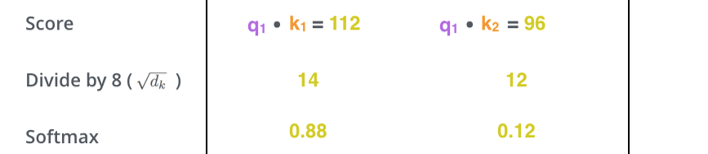
이제 query 벡터와 모든 sequence input의 key 벡터 사이의 연관성을 계산해야 합니다. Self-attention에서 Query와 Key 행렬의 크기는 같고 그 결과로 나온 query와 key 벡터의 차원도 같기 때문에, 내적(inner-product)을 통해 두 벡터의 유사도를 계산할 수 있습니다.
논문에서는 내적을 통해 계산된 attention score를 dkey의 제곱근으로 나눠주었습니다. 이는 embedding 또는 key 벡터의 차원이 증가함에 따라 score 값이 커지는 현상을 방지하기 위해서이며, 역전파 과정에서 발생하는 gradient의 크기를 안정화하는 효과가 있습니다.
마지막으로 softmax 연산을 통해 합이 1인 형태로 결과값을 normalize하여 최종적인 attention score을 얻을 수 있습니다.
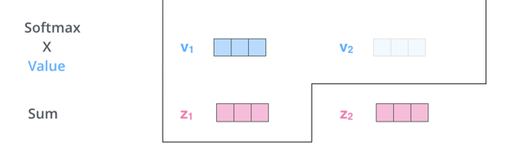
이제 각 value 벡터에 attention score를 곱해서 최종적인 attention layer의 output을 얻게됩니다. 이는 각 벡터들 사이의 연관성(또는 유사도)를 가중합한 value 벡터입니다. 이것으로 Self-attention 메커니즘이 마무리되고, 결과로 얻은 벡터는 feed-forward network를 거쳐 다음 encoder block의 input 역할을 하게 됩니다.
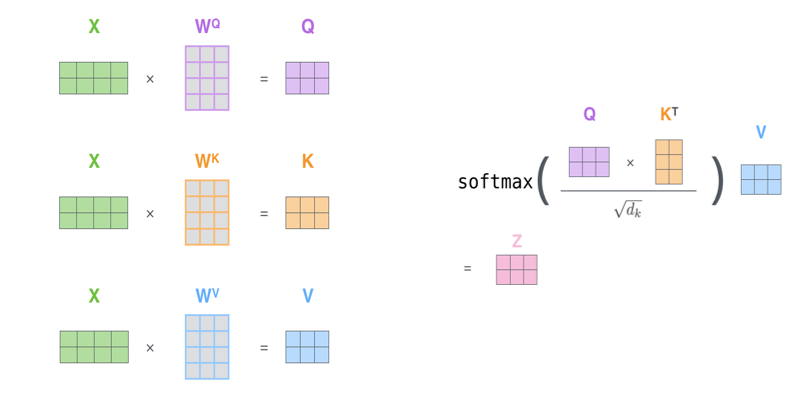
이 모든 과정은 행렬 연산으로 아주 빠르게 처리할 수 있습니다. 행렬 연산이라는 attention 메커니즘의 특성 덕분에 Transformer에서는 기존 RNN 기반 네트워크에서 이루지 못한 sequential 데이터의 병렬화 가 가능해집니다.
Multi-head attention
Transformer에서는 attention의 성능을 높이기 위해 Multi-head attention을 도입하였습니다. Multi-head attention이란, weight를 공유하지 않는 N(number of heads)개의 Query, Key, Value 행렬을 병렬적으로 두어 서로 다른 attention score을 계산할 수 있도록 한 방식입니다. (본문에서 N=8 입니다.) Multi-head attention을 이용하는 이유는, 다양한 관점에서 단어(또는 pixel) 사이의 관계를 파악하기 위해서입니다. 아래 아주 유명한 예시가 있습니다.
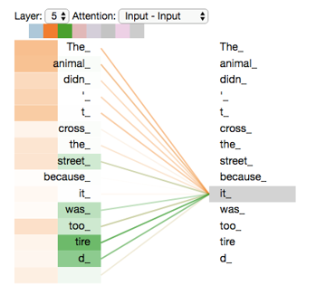
The animal didn't cross the street because it was too tired
위 문장에서, `it` 이라는 단어는 `animal`을 지칭할 수도 있고 `street`을 지칭할 수도 있습니다. 우리는 `it`이 `animal`을 지칭하는 것을 알고 있지만, 만약 학습이 잘못되어 `street`의 attention score가 커지게 된다면 좋은 translation 성능을 내지 못할 것입니다. 이러한 오류를 방지하기 위해 Transformer 에서는 여러 개의 Attention head 를 병렬적으로 두어 각 module에서 서로 다른 관점의 attention score을 가지게 하였습니다. 서로 다른 관점으로 input sequence를 파악하길 바라는 의도로 추가하였으니, weight sharing을 하지 않는 것은 당연하게 됩니다.
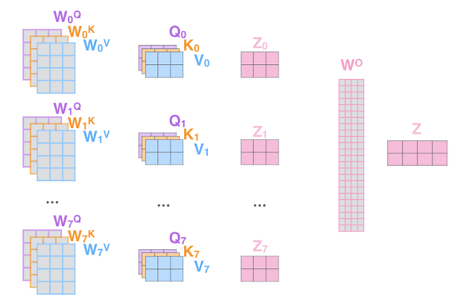
Multi-head attention을 거치게 되면 N개의 output을 얻게 됩니다. 다음 layer를 통과하기 전에 N개의 output을 하나로 합쳐야 하는데 본 논문에서는 단순히 concatenate 연산을 통해 해결하였습니다. 이후 feed-forward network를 거쳐 input과 같은 차원을 가지는 벡터로 변환됩니다. Multi-head attention을 이용하더라도 일반적으로 weight parameter 개수는 일정하게 유지되는데, N개의 head를 둠으로써 행렬 개수가 N개로 늘어나는 만큼 행렬의 차원이 1/N배로 줄어들기 때문입니다.
Positional Encoding
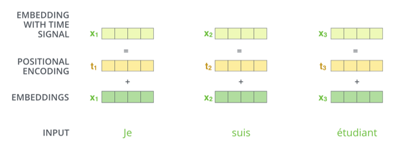 그렇다면 Transformer는 순차적인 구조가 아닌데 어떻게 sequential 데이터의 위치 정보를 전달할 수 있을까요? 본문에서는 그에 대한 답으로 positional encoding을 제안합니다.
Positional encoding이란 embedding 벡터가 encoder 또는 decoder에 들어가기 전에 위치정보를 지닌 벡터를 더해주는 과정을 의미합니다. 만약 position encoding을 가하지 않는다면, 문장 맨 앞에 나온 `Animal` 이라는 단어와 문장 맨 뒤에 나온 `Animal`이 같은 값을 가진 채로 네트워크에 입력되게 됩니다. 하나는 주어 역할을 하고, 다른 하나는 목적어 역할을 할 수도 있는데 말입니다.
Transformer에서는 embedding 벡터에 위치에 따라 값이 달라지는 값을 더해줌으로써 sequence의 순서를 고려하였습니다. Positional encoding 벡터에는 여러 종류가 있을 수 있지만, 본문에서는 sinosoidal positional encoding 형식을 활용하였습니다. 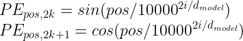 dmodel=512인 경우에 대한 positional encoding 값은 colormap 형식으로 아래와 같이 나타낼 수 있습니다. 20개(y-axis)의 input에 대해 512차원(x-axis)의 연속적이며 상대적인 정보를 잘 나타내고 있습니다. 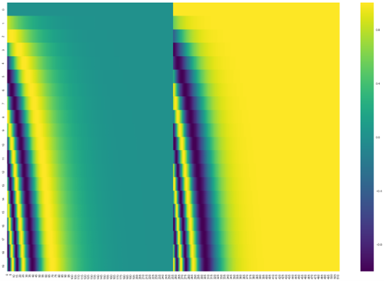 이외에 positional encoding 벡터를 학습 과정에서 결정하는 Learned positional encoding 방법이 있습니다. 다만 Learned positional encoding 방법은, 이전에 학습을 진행한 적 없던 긴 sequence의 input이 들어왔을 때, 적절한 positional encoding을 가하지 못하게 되는 한계점이 있습니다.
Transformer Architecture
이제 Transformer가 어떤 구조를 가지고 있으며 각 구조는 어떤 역할을 하는지 살펴보겠습니다. 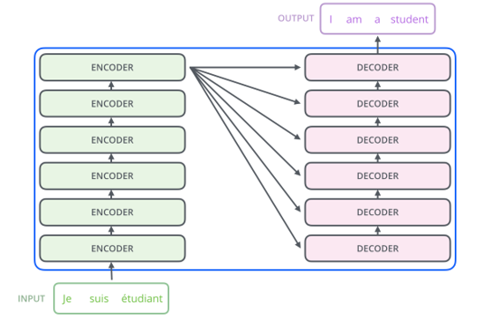 Transformer는 여러 개의 encoder 블럭과 decoder 블럭으로 구성되어 있습니다. 본문에서는 각각 6개의 블럭을 사용하였습니다. Input sequence가 같은 구조의 encoder/decoder 블럭을 연속해서 통과해야 하므로, 각 블럭의 input과 output은 항상 같은 크기를 가져야 합니다. 이를 위해 보통 마지막 layer에 feed-forward network를 배치하여 차원을 맞춰주는 역할을 합니다.
1. Encoder blocks
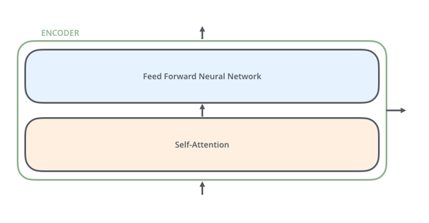 하나의 Encoder block은 두 부분의 sub-layer로 구분할 수 있습니다. 첫 번째 layer은 Transformer의 핵심 개념인 self-attention을 수행하는 layer입니다. Self-attention을 거쳐 얻은 output은 두 번째 layer인 feed-forward layer를 통과합니다.
각 sub-layer의 output은 residual connection과 layer normalization 과정을 거치게 됩니다. Residual connection은 여러 encoder 블럭을 지나게 되면서 positional encoding 정보가 희미해지는 현상을 방지하기 위해서 추가되었습니다. 또한 layer normalization은 parameter 분포를 일정하게 만들어 학습의 안정성 및 성능을 향상시키기 위해 추가되었습니다.
2. Decoder blocks
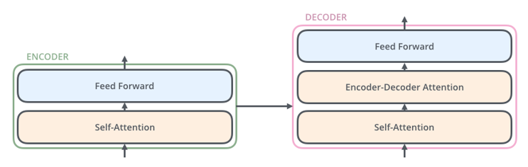 Decoder는 encoder의 두 sub-layer 사이에 attention을 가해주는 sub-layer가 하나 더 추가된 형태로 구성되었습니다.
이 sub-layer은 decoder의 self-attention layer의 output을 query로, encoder의 output을 key와 value로 받는 attention layer입니다. 즉 decoder의 input이 encoder에서 학습된 representative input의 어떤 부분과 유사하며, 따라서 올바른 output을 도출하기 위해서는 input의 어떤 부분에 집중해야 하는지를 파악하는 부분이라고 할 수 있습니다. Sub-layer 내의 연산은 WK, WV(weight parameter)가 encoder의 output 벡터를 key와 value 행렬로 변환하고, WQ가 decoder의 첫 번째 sub-layer의 output 벡터를 query 행렬로 변환하는 형태로 진행됩니다.
또한 decoder의 첫 번째 sub-layer인 self-attention layer은 attention을 학습할 때 아직 보거나 도출되지 않은 output sequence 값들에 대해 아무런 영향을 받지 않도록 attention score의 뒷부분에 masking을 가해줍니다. 이는 내적을 통해서 계산된 score 아주 큰 음수를 더하는 더하는 형태로 이루어지는데, softmax 연산을 거치면서 0에 수렴하는 attention score가 만들어지기 때문입니다.
각 sub-layer의 output은 encoder에서와 마찬가지로 residual connection과 layer normalization 과정을 거칩니다. Input과 output의 크기는 항상 같게 연산되고, decoder는 병렬적이지 않고 순차적으로 결과를 예측합니다.
결과적으로 탄생한 Transformer의 전체 구조는 다음과 같습니다.

Training
Transformer의 학습은 Workshop on Machine Translation(WNT) 데이터셋 중 English-German과 English-French를 활용하여 진행하였습니다.
학습 과정은 Adam optimizer로 최적화하였고, 일정한 학습 단계가 지나면 learning rate가 일정한 비율로 감소하게끔 스케줄링하였습니다.
네트워크의 일반화를 위해 각 sub-layer의 output에 dropout(p=0.1)을 적용하였으며 손실 함수를 계산할 때 one-hot label이 아닌 soft label (eta = 0.1)을 이용하는 label smoothing 기법을 사용하였습니다. 이러한 일반화 과정을 거치면 Transformer의 예측이 불확실해지는 경향을 보이기에 perplexity metric 관점에서는 손해를 보이지만, over-fitting을 방지하여 정확도 및 BLEU score 등의 metric 관점에서는 향상된 성능을 기대할 수 있습니다.
Summary
Transformer는 순차적인 학습 모델의 내재적인 한계에 의한 학습의 비효율성을 Self-attention 메커니즘을 통한 병렬화로 단번에 해결한 획기적인 발명이라고 생각합니다. Attention을 가하는 과정에서도 다양한 관점의 compatibility를 얻기 위해 병렬적으로 여러 개의 head를 학습하는 multi-head attention 기법이나, sequence의 순서 정보를 가하기 위한 positional encoding 기법 등 많은 창의적인 기법도 구조의 성능을 높이기 위해 고안되었습니다. 자연어와 같은 순차적인 데이터를 다루는 ML 연구자분들은 한번쯤 꼭 읽어보시면 좋을 것 같습니다. 읽어주셔서 감사합니다 :)
참고 문헌 및 출처